UDN
Search public documentation:
KismetUserGuideCH
English Translation
日本語訳
한국어
Interested in the Unreal Engine?
Visit the Unreal Technology site.
Looking for jobs and company info?
Check out the Epic games site.
Questions about support via UDN?
Contact the UDN Staff
日本語訳
한국어
Interested in the Unreal Engine?
Visit the Unreal Technology site.
Looking for jobs and company info?
Check out the Epic games site.
Questions about support via UDN?
Contact the UDN Staff
UE3 主页 > 虚幻编辑和工具 >Unreal Kismet用户指南
UE3 主页 >Kismet可视化脚本 > Unreal Kismet 用户指南
UE3 主页 > 过场动画制作人员 > Unreal Kismet用户指南
UE3 主页 >Kismet可视化脚本 > Unreal Kismet 用户指南
UE3 主页 > 过场动画制作人员 > Unreal Kismet用户指南
Unreal Kismet 用户指南
概述
打开Kismet
 按钮即可。每个关卡仅有一个序列，然而，它可以任意地复杂，并且您可以把对象分组放到子序列层次结构中(关与这方面的更多信息稍后讲述)。当您按下那个按钮时，您将会打开关卡的最高层次的序列。
按钮即可。每个关卡仅有一个序列，然而，它可以任意地复杂，并且您可以把对象分组放到子序列层次结构中(关与这方面的更多信息稍后讲述)。当您按下那个按钮时，您将会打开关卡的最高层次的序列。
Kismet 界面

菜单条
窗口
- Properties(属性): - 显示属性面板。
- Sequences(序列) - 显示序列面板。
工具条
以下是工具条上每个按钮的描述，按照它们在工具条上的出现顺序从左到右介绍。| 图标 | 描述 |
|---|---|
 | 在序列历史记录中倒序导航。 |
| 在序列历史记录中正序导航。 | |
 | 显示最近的序列历史，并提访问权来设置及跳转到 视口书签。 |
 | 跳转到父项序列。 |
| 重命名当前序列。 | |
| 缩放视图到选中项。如果没有选中任何项，将缩放来适应整个序列。 | |
| 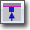 | 隐藏未使用的连接器。 |
 | 显示所有连接器。 |
 | 创建一个新的子序列。 |
 | 切换Kismet搜索窗口。 |
| 打开Kismet Update List(Kismet更新列表)窗口的一个新实例。 | |
| 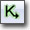 | 打开一个新的Kismet窗口。 |
图表面板
 这个面板是创建Kismet序列的工作区。它显示了所有的动作、条件、事件、变量及属于当前序列的子序列。在这里可以在它们之间添加新的序列对象并进行连接。
这个面板是创建Kismet序列的工作区。它显示了所有的动作、条件、事件、变量及属于当前序列的子序列。在这里可以在它们之间添加新的序列对象并进行连接。
属性面板
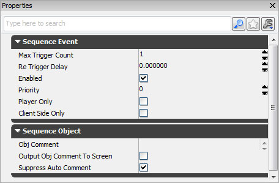
属性面板显示了属于图表面板中当前选中的对象的属性，从而允许修改它们。如果没有选中任何对象，则不显示属性。序列面板
 序列面板显示了当前关卡中和任何动态载入关卡中的所有序列和子序列的层次结构。选中其中一个序列将会导致序列及它的内容显示在图表面板中。
序列面板显示了当前关卡中和任何动态载入关卡中的所有序列和子序列的层次结构。选中其中一个序列将会导致序列及它的内容显示在图表面板中。
控制
鼠标控制
这里是操作Kismet的基本鼠标控制：| 左击 + 拖拽背景 | 到处移动序列 |
| 鼠标滚轮 | 缩放控制 |
| 左击序列对象 | 选择对象 |
| Ctrl+左键点击序列对象 | 切换对象的选择状态。 |
| CtrL+拖拽 | 移动当前的选项。 |
| Ctrl+Alt+鼠标左击+拖拽 | 框选 |
| Ctrl+Alt +Shift +拖拽 | 盒式选择 (添加到当前选项) |
| 点击并拖拽连接器 | 创建连接(在连接器或变量上释放鼠标)。 |
| 右击背景 | 弹出New Object(新建对象)菜单。 |
| 右击对象 | 弹出 Object（对象）菜单 |
| 右击连接器 | 弹出Connection (连接）菜单。 |
| Alt + 左击连接器 | 断开到那个连接器的所有连接 |
| 双击子序列 | 打开子序列。 |
| 双击Matinee动作 | 打开Matinee关键帧工具。 |
| 双击命名变量 | 跳转到命名变量。 |
| 双击Activate Remote Event (激活的远程事件)动作 | 跳转到相关的Remote Event (远程事件)。 |
| Double-click on Remote Event(双击远程事件) | 跳转到相关的 Activate Remote Event (激活的远程事件)动作。 |
键盘控制
这里是关于Kismet的键盘控制：| Ctrl+ C | 复制选中的对象。 |
| Ctrl + V | 粘帖 |
| Ctrl+X | 剪切选中对象。 |
| Ctrl+W | 克隆选中对象 |
| Delete（删除） | 删除选中对象 |
| Backspace(空格键) | 跳转到父项序列。 |
| Ctrl+Z | 取消 |
| Ctrl+Y | 重复 |
| C | 在选项周围创建注释框。 |
| A | 缩放来适应 选项/整个序列。 |
| Ctrl+Tab | 跳转到前一个序列。 |
| R 并左击 | 创建RemoteEvent/ActivateRemoteEvent (远程事件/激活的远程事件 对) |
| PageUp | 把选中的对象放到前面。 |
| PageDown | 把选中的对象放到后面。 |
热键
有一些用于快速添加特定类型的动作、事件、条件或变量的热键:| B + 鼠标左击 | 添加一个 Boolean(布尔)变量。 |
| Ctrl + B + 鼠标左击 | 添加Compare Bool(比较布尔值)条件。 |
| D + 鼠标左击 | 添加一个Delay(延迟)动作。 |
| E + 鼠标左击 | 添加一个External(外部)变量。 |
| F + 鼠标左击 | 添加一个Float(浮点型) 变量。 |
| G + 鼠标左击 | 添加一个Gate动作。 |
| I + 鼠标左击 | 添加一个整型变量。 |
| Ctrl + I + 鼠标左击 | 添加一个Compare Int(比较整型值)条件。 |
| F + 鼠标左击 | 添加一个Float(浮点型) 变量。 |
| Ctrl + F + 鼠标左击 | 添加一个Compare Float（比较浮点型值）条件。 |
| L + 鼠标左击 | 添加一个Log（日志）动作。 |
| M + 鼠标左击 | 添加一个Matinee序列。 |
| N + 鼠标左击 | 添加一个Named(已命名)变量。 |
| O + 鼠标左击 | 添加一个Object(对象) 变量。 |
| P +鼠标左击 | 添加一个Player(玩家) 变量。 |
| Q + 鼠标左击 | 创建一个具有指定名称的新的子序列。 |
| R + 鼠标左击 | 添加一个具有指定名称的Remote Event（远程事件）。 |
| S + 鼠标左击 | 添加一个Play Sound（播放声效）动作。 |
| Ctrl + S + 鼠标左击 | 添加Level Startup(关卡启动)事件。 |
| T +鼠标左击 | 添加Toggle（切换） 动作。 |
| X + 鼠标左击 | 添加一个Int Counter(整型计数器) 条件。 |
| [ + 鼠标左击 | 添加一个Sequence Activated(已激活序列)事件。 |
| ] + 鼠标左击 | 添加一个Finish Sequence(完成序列)事件。 |
使用序列
Sequence Object(序列对象)类型
您需要放置4种类型的对象来组成您的序列。| Event(事件) | 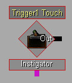 | 这些对象可能会从游戏中的一个Actor为您的序列创建一个‘输入端’。它们由红色的菱形表示。 |
| Action(动作) | 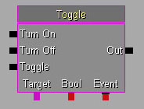 | 这些对象在您关卡中的Actor行执行一些操作。由一个方框表示，方框的左侧有输入端，右侧有输出端 ，底部使一些变量连接。 |
| Condition(条件) |  | 这些不会真正地影响关卡，但是它们可以控制序列的流程。 |
| Variable(变量) |  | 这些对象用于存储特殊类型的信息，这些信息供Event(事件)、Action(动作)或Condition(条件)使用。它们由带颜色的圆圈表示。 |
| Red(红色) | Bool (真或假) |
| Blue(蓝色) | 浮点数值(比如1.54) |
| Cyan(青色) | 整数值(比如3) |
| Green(绿色) | 字符串(比如 "Foo") |
| Gold(金黄色) | 向量(比如(0.5, 2.75, 5.5) ) |
| Purple（紫色） | 对象引用(比如 关卡中的一个Actor)、 Object List(对象列表) 、Object Volume（对象体积）或玩家。 |
| Orange(橘色) | Matinee数据 |
| Black（黑色） | 未连接的外部变量或命名变量。 |
基本实例
这里是您可以在Kismet中组合的一种序列的示例： 在这个例子中，当玩家触摸关卡中的触发器Trigger1，它将会打开点光源 PointLight_0。在Kismet中的黑色的线代表‘操作流程’。跟随的箭头指出了动作发生的顺序。带颜色的线是变量和对象之间的简单的连接线。
在这个例子中，当玩家触摸关卡中的触发器Trigger1，它将会打开点光源 PointLight_0。在Kismet中的黑色的线代表‘操作流程’。跟随的箭头指出了动作发生的顺序。带颜色的线是变量和对象之间的简单的连接线。
创建事件
关卡中不同的Actors将会支持产生不同的事件。比如，Trigger(触发器)actor支持Touch(触摸) 和 Untouch(未触摸)事件。要想在您的Kismet序列中创建一个新的Event，在主UnrealEd视口中选择您想创建事件的Actor(s)，然后在Kismet中右击来弹出New Object(新建对象)菜单。 如果这些Actor(s)和Kismet序列在同一个关卡中，将会出现一个成为`创建事件使用 ...'的子菜单，给出了您选中的Actor的名称。那个子菜单将会包含Actor支持的所有事件类型。选择您需要的事件类型将会出现新的Event(事件)。如果Actor有和它相关联的图标，它将会在菱形的中间描画那个图标。 如果您在关卡中不止选中了一个Actors并选择`创建事件使用..'，它将会每个Actor，创建一个事件。同时，如果您双击一个Event(时间)，它将会是UnrealEd相机跳转对准那个Actor。动态绑定事件
当您在编辑器中编辑器关卡时，有时候您想用于触发一个事件的对象不存在。比如，游戏中产生的生物。要想解决这个问题，您可以把一个事件‘附加’到一个运行时的变量中的对象上。请查看下面的例子：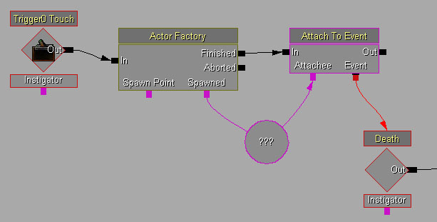
当执行Actor Factory时，它创建一个新的actor并把它放到对象变量中(当前为空)。然后它将调用AttachToEvent动作，来把Death(死亡)事件关联到变量的内容上。然后，无论何时当actor死亡时，将会触发那个事件。注意，当在编辑器中创建这个序列时，这个事件不和任何Actors相关联。创建变量
当您使用New Variable(新建变量)子菜单创建一个新的变量时，它将会初始化为默认值(通常是0或空)。您可以通过简单地编辑器它的属性来改变它的值。创建一个正确类型的新变量并把它附加到一个已经存在的变量连接器上的快速方法是右击连接器并选择`创建新的变量…'。 您也可以使用和创建事件一样的方法来在您的关卡中创建一个包含到一个Actor引用的Object(对象)变量。简单地选择您想为其创建变量的一个或多个Actor，然后选择`新建对象变量使用….’。要想把一个Actor引用分配给现有的Object(对象)变量，可以选择那个Actor，右击变量并选择`分配…给对象变量’。双击一个包含着到一个Actor引用的Object(对象)变量，虚幻编辑器的相机将会跳转到关卡中的那个actor上，和事件的方式一样。对象注释
大多数Sequence Objects(序列对象)都有一个ObjComment(对象注释)属性。您在那里输入的任何文本都将会以蓝色的文字显示在那个对象的上方(请参照以下图片的第18项)。这让您解释了这个对象是做什么用的，并且使得理解别人创建的复杂序列更加容易。同时请参照本文档后面的`Comment Boxes(注释框)'部分。SubSequences(子序列)
UnrealKismet的一个强大的功能是创建包含它们自己的序列对象集合的‘子序列’。按照这种方法，您可以创建出复杂的子序列层次结构。您可以使用Sequence Explorer Window(序列浏览器窗口)(前面图片的14项)来查看当前的层次并到处移动它。每个子序列将记录它的上一个视图位置及缩放比例。 要想创建子序列，仅需简单地选择您想放置到子序列中的对象并从New Object(新建对象)的关联菜单中选择`Create new sequence(创建新的对象序列)'即可。将会提示您为那个新的序列输入一个名称。然后选中的对象将会被一个单独的子序列对象所代替。您可以通过蓝色的标题栏来区分子序列对象和正常的序列对象。 您也可以为您的子序列创建输入端、输入端以及变量连接器。要想创建输入端，只要添加一个`SequenceActivated(激活序列)'事件到您的子序列中即可。要想创建一个输出端，只要添加一个`Finish Sequence(完成序列)'动作即可。要想创建变量连接器，只要添加一个`External Variable(外部变量)'即可。当您第一次放置一个External Variable(外部变量)时，它将会有一个黑色的轮廓，并且变量连接器是黑色的。这是因为还有指定变量的类型。要想设置类型，只要简单地把External Variable(外部变量)和某物相连即可，这样它便会呈现出哪种类型并且会相应地改变颜色。您可以通过改变InputLabel、OutputLabel和 VariableLabel参数来改变在它父项中序列显示的连接器名称。 这里是一个实例子序列：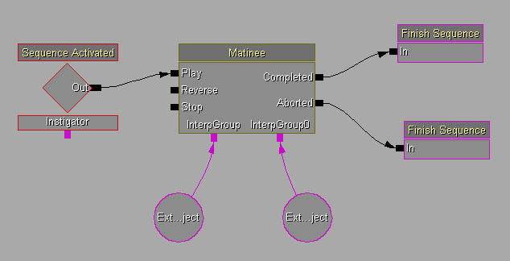
这里使它在父项序列中出现的情形： 任何时候您都可以通过右击一个子序列然后选择`Rename selected sequence(重命名选择序列)'，或当您在序列里面时点击`Rename current sequence(重命名当前序列)(前面图片中的第2项)'按钮来重命名子序列。
任何时候您都可以通过右击一个子序列然后选择`Rename selected sequence(重命名选择序列)'，或当您在序列里面时点击`Rename current sequence(重命名当前序列)(前面图片中的第2项)'按钮来重命名子序列。
导入/导出子序列
有时候一旦您有一个有用的子序列，您或许想在多个关卡中使用它，或者和其它的关卡设计人员共享这个序列。要想实现这个过程，您可以把那个序列导出到一个包中，导出方式和导出贴图或网格物体一样。 要想导出序列，仅需右击您的序列，并选择`Export sequence to package(导出序列到包中)'。 然后将会提示您提供放置这个序列的Package(包)、Group (组)和Name(名称)。
然后将会提示您提供放置这个序列的Package(包)、Group (组)和Name(名称)。
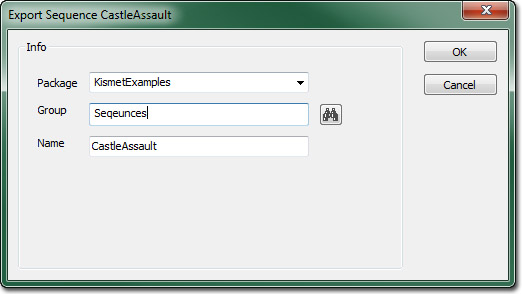
然后您应该可以在通用浏览器中看到您的新Sequence(序列)(您可以使用组合框来过滤序列)。 要想导入序列，首先在浏览器中找到您需要的序列并选择它。然后在Kismet中右击背景并选择`导入序列...'。当您从包中导入一个序列时，它制作一个完全的副本到您的序列中，所以您可以自由地编辑它。
注意，当导入序列时，那个序列中到关卡中所有Actors的应用都是空的。由于这个原因，您通常需要添加连接器到您的子序列中，以便您可以把它当成一个‘黑盒子’并使它更容易进行连接应用。
要想导入序列，首先在浏览器中找到您需要的序列并选择它。然后在Kismet中右击背景并选择`导入序列...'。当您从包中导入一个序列时，它制作一个完全的副本到您的序列中，所以您可以自由地编辑它。
注意，当导入序列时，那个序列中到关卡中所有Actors的应用都是空的。由于这个原因，您通常需要添加连接器到您的子序列中，以便您可以把它当成一个‘黑盒子’并使它更容易进行连接应用。
命名变量
您操作复杂序列会遇到的一个问题是您需要从很多地方、在序列层次的任何点上引用一个变量。尽管您可以通过使用External Variables(外部变量)链解决这个问题，但是`Named Variables(命名变量)'提供了另一种简单的方法。 要想使用命名变量，首先您需要为现有的变量赋予一个名字。在VarName(变量名称)文本域的属性中输入名称。当您执行这个操作时，您会看到它的名称以红色的形式出现在变量下面： 现在可以通过使用已命名的变量从您序列的任何地方来访问这个变量了。要想完成这个操作，可以使用New Object(新建对象)菜单来添加一个新的Named Variable(命名变量)。最初它将是这样的：
现在可以通过使用已命名的变量从您序列的任何地方来访问这个变量了。要想完成这个操作，可以使用New Object(新建对象)菜单来添加一个新的Named Variable(命名变量)。最初它将是这样的：
 黑色的边界意味着它没有类型 – 当您第一次把它连接到某个东西上时来确定类型，和External Variables(外部变量)的方式一样。中间的`< ??? >'意味着您还没有赋予它一个用于查找的变量名称。要想给它一个变量名称，您仅需要像Named Variable(命名变量)的FindVarName(查找变量名称)属性那样进行输入。如果接下来我们把它连接到一个Int型变量连接器上，并且假设具有那个名称的Int变量在关卡序列的任何地方都存在，它应该如下所示：
黑色的边界意味着它没有类型 – 当您第一次把它连接到某个东西上时来确定类型，和External Variables(外部变量)的方式一样。中间的`< ??? >'意味着您还没有赋予它一个用于查找的变量名称。要想给它一个变量名称，您仅需要像Named Variable(命名变量)的FindVarName(查找变量名称)属性那样进行输入。如果接下来我们把它连接到一个Int型变量连接器上，并且假设具有那个名称的Int变量在关卡序列的任何地方都存在，它应该如下所示：
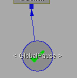
Named Variable(命名变量)内部的勾号意味着它是否存在任何问题。如果您看到了叉号，那么它意味着以下事情之一：- Named Variable(命名变量)没有FindVarName(查找变量名称)。
- Named Variable(命名变量)没有类型(没有连接到任何东西上)。
- 没有找到和FindVarName(查找变量名称)相对应的变量。
- 和FindVarName(查找变量名称)相对应的变量的类型是错误的。
- 有不止一个和FindVarName(查找变量名称)相对应的变量。
Kismet 搜索
Kismet搜索窗口允许您在关卡序列中的任何地方查找序列对象。Search Type(搜索类型)组合框允许您选择您想搜索的内容：| Comments/Names(注释/名称) | 这将会在任何对象的注释或名称中搜索输入的字符串。 |
| Referenced Object Name(应用的对象名称) | 这将会在引用对象(也就是关卡中的Actor)的名称中查找和输入字符串精确匹配的对象名称。 |
| Named Variable(命名变量) | 查找其VarName (变量名称)和输入名称完全匹配的变量。 |
| Named Variable Use(命名变量应用) | 查找其FindVarName和输入名称完全匹配的所有Named Variables(命名变量)。 |
帮助和技巧
Comment Boxes(注释框)
注释框对于那些图形化地分组对象并对其添加注释是非常有用的。要想创建一个注释框，选择您想分组的对象并从New Object(新建对象)关联菜单中选择`New Comment(新建注释)'(或者您可以按下’C’键)。如果您在创建注释时没有选择任何东西，那么它仅创建一些独立的蓝色文本。这里是使用注释框的序列的例子：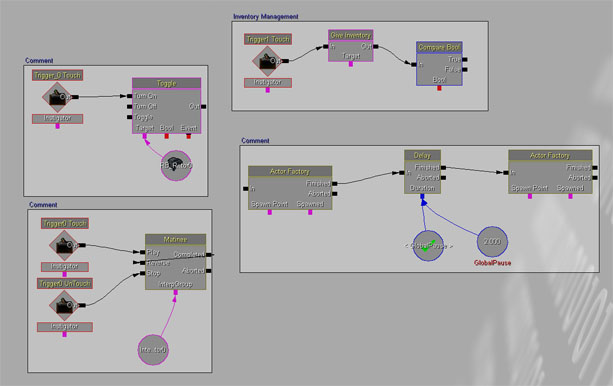
您可以通过选择您放置的注释框并使用右下角的黑色的三角形来重新调整注释框的大小。您也可以改变边界并填充颜色、改变边界宽度、甚至为注释框背景分配一个贴图或材质。注释框使得理解序列变得更加容易，并且我们强烈推荐您使用它！剪切/复制/粘帖
Kismet支持复制及粘帖选中的对象或子序列。它使用通过windows的剪切板导出文本，所以您可以把那些复制的对象粘帖到Notepad中来进行调换或调试脚本等。 注意，当您右击Kismet的背景时，有一个`Paste Here(粘帖至此)'菜单选项，它允许您把剪切板上的内容粘帖到鼠标所在的位置。 同样需要注意的是当在其它关卡的序列中粘帖Kismet元素时，在旧关卡中引用的对象将会自动删除，不会给出提示警告。复制/粘帖 连接
如果您右击黑色的逻辑连接器，您可以选择'Copy Connections(复制连接)'。然后您可以右击另一个连接器并把那个连接复制到那个新的位置。这使得从一个动作的几条路线改到另一个动作中变得更加容易。缩放来适应视图
如果您选择了一组对象并按下了工具条上的`Zoom To Fit(缩放来适应视图)'按钮(前面图片中的第3项)或按下’A’键，它将会调整视图位置并缩放来包含那个选项。如果没有选择任何东西，它将会调整视图来包含这个序列。如果您在空白区域’迷失’了自己时，这是有用的。视口书签
Kismet中的视口书签(Viewport bookmarks)的工作方式和它们在主关卡编辑器中的工作方式类似。可以把图表面板的位置和缩放级别保存为书签，以便您可以轻松快速地跳转到指定位置。 设置书签- 导航到图表面板中期望的位置和缩放级别。

- 点击Kismet工具条中的
 按钮并从 Bookmarks(书签) > Set Bookmark(设置书签) 下的列表中选择合适的书签。
按钮并从 Bookmarks(书签) > Set Bookmark(设置书签) 下的列表中选择合适的书签。

同样，您可以使用键盘快捷方式 (Ctrl + [0-9])来设置合适的书签。 - 现在已经设置了书签，它出现在了 Bookmarks(书签) > Jump to Bookmark(跳转到书签) 菜单中。
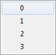
- 无论您在Kismet中的任何地方工作，都可以点击Kismet工具条上的 按钮并从 Bookmarks(书签) > Jump To Bookmark(跳转到书签) 下的列表中选择期望的书签。

- 图表面板将会重新调整位置并进行适当的放大或缩小来显示已保存的书签。
自动平移
当移动对象或创建连接时、当您移动您的鼠标到屏幕的边缘时，它将会自动地向那个方向平移。显示Kismet引用
在主UnrealEd视口中，您可以打开`Show Flags(显示标志)'下拉菜单(每个视口中的小黑色的向下指的箭头)并选择`Kismet References(Kismet引用)'选项。这将会高亮显示所有当前被一个Kismet对象变量或事件引用的Actors。 当前关卡中的Actor将会突出地显示在一个方框里，非当前关卡中的actors将突出显示在括弧里。 当您在编辑关卡时，这对于确保您不会意外地重新放置或删除您正在使用的序列中的Actors是非常有用的。同时，当一个actor被Kismet引用并且您尝试删除那个Actor 或把它移动到另一个关卡中时，它将会出现以下警告给您提示：
当您在编辑关卡时，这对于确保您不会意外地重新放置或删除您正在使用的序列中的Actors是非常有用的。同时，当一个actor被Kismet引用并且您尝试删除那个Actor 或把它移动到另一个关卡中时，它将会出现以下警告给您提示：
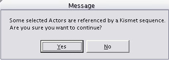